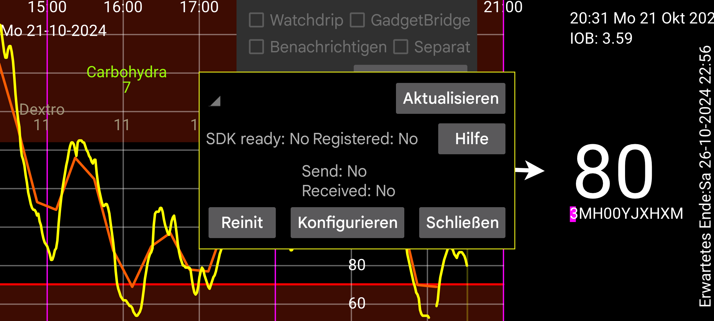

ar be de es fr hi it ja nl pl pt ru tr uk uz zh en
Die Quelle von Kerfstok kann von https://www.juggluco.nl/Kerfstok/Kerfstok-source.html heruntergeladen werden. Benutzer können es frei ändern. Jede Uhren-App hat eine eindeutige Kennung. Wenn die Kennung von der Standardeinstellung abweicht, muss Juggluco sie kennen, um mit der Uhren-App zu kommunizieren. Um eine andere Kennung anzugeben, drücken Sie ID und geben Sie die 32-stellige Hex-Zeichenfolge ein. Juggluco auf einem Gerät kann nur mit einer Uhren-App auf einer Uhr verbunden werden. Änderungen führen zu Datenverlust.
Shortcuts werden an die Garmin-Uhren-App Kerfstok gesendet, um bestimmte Werte einfach einzufügen.
Geben Sie an, ob Kerfstok weiß auf schwarz statt schwarz auf weiß sein soll.